28 Graphics for communication
28.1 Introduction
library("tidyverse")
#> ── Attaching packages ───────────────────────────────────────────────────── tidyverse 1.2.1 ──
#> ✔ ggplot2 3.0.0 ✔ purrr 0.2.5
#> ✔ tibble 1.4.2 ✔ dplyr 0.7.6
#> ✔ tidyr 0.8.1 ✔ stringr 1.3.1
#> ✔ readr 1.1.1 ✔ forcats 0.3.0
#> ── Conflicts ──────────────────────────────────────────────────────── tidyverse_conflicts() ──
#> ✖ dplyr::filter() masks stats::filter()
#> ✖ dplyr::lag() masks stats::lag()
library("modelr")
library("lubridate")
#>
#> Attaching package: 'lubridate'
#> The following object is masked from 'package:base':
#>
#> date28.2 Label
28.2.1 Exercises
28.2.1.1 Exercise 1
Create one plot on the fuel economy data with customized title, subtitle, caption, x, y, and colour labels.
ggplot(data = mpg,
mapping = aes(x = reorder(class, hwy, median), y = hwy)) +
geom_boxplot() +
coord_flip() +
labs(
title = "Compact Cars have > 10 Hwy MPG than Pickup Trucks",
subtitle = "Comparing the median highway mpg in each class",
caption = "Data from fueleconomy.gov",
x = "Car Class",
y = "Highway Miles per Gallon"
)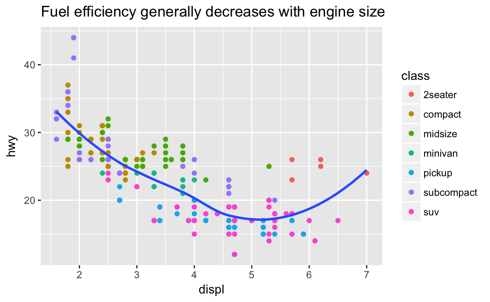
28.2.2 Exercise 3
The geom_smooth() is somewhat misleading because the hwy for large engines is skewed upwards due to the inclusion of lightweight sports cars with big engines. Use your modeling tools to fit and display
a better model.
ggplot(mpg, aes(displ, hwy, colour = class)) +
geom_point(aes(colour = class)) +
geom_smooth(method = "lm", se = FALSE) +
labs(
title = "Fuel efficiency generally decreases with engine size",
subtitle = "Subcompact cars show the greatest sensitivity to engine size",
caption = "Data from fueleconomy.gov"
)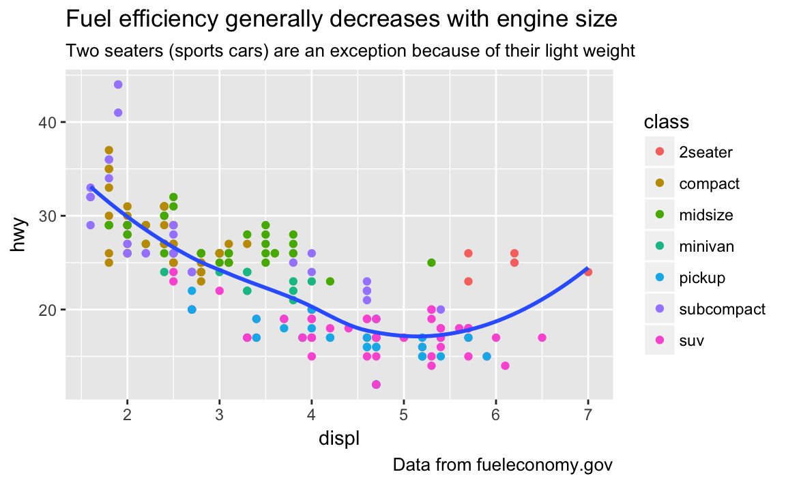
mod <- lm(hwy ~ class, data = mpg)
mpg %>%
add_residuals(mod) %>%
ggplot(aes(displ, resid)) +
geom_point() +
geom_smooth(method = "lm", se = FALSE) +
labs(
title = "Fuel efficiency decreases with engine size",
subtitle = "Highway MPG for Cars After Subtracing Mean MPG of their Class",
caption = "Data from fueleconomy.gov",
x = "Highway MPG Relative to Class",
y = "Engine Displacement"
)
28.2.2.1 Exercise 3
Take an exploratory graphic that you’ve created in the last month, and add informative titles to make it easier for others to understand.
By its very nature, this exercise is left to readers.
28.3 Annotations
28.3.1 Exercises
28.3.1.1 Exercise 1
Use geom_text() with infinite positions to place text at the four corners of the plot.
I can use similar code as the example in the text. However, I need to use vjust and hjust in order for the text to appear in the plot, and these need to be different for each corner. But, geom_text takes hjust and vjust as aesthetics, I can add them to the data and mappings, and use a single geom_text call instead of four different geom_text calls with four different data arguments, and four different values of hjust and vjust arguments.
label <- tribble(
~displ, ~hwy, ~label, ~vjust, ~hjust,
Inf, Inf, "Top right", "top", "right",
Inf, -Inf, "Bottom right", "bottom", "right",
-Inf, Inf, "Top left", "top", "left",
-Inf, -Inf, "Bottom left", "bottom", "left"
)
ggplot(mpg, aes(displ, hwy)) +
geom_point() +
geom_text(aes(label = label, vjust = vjust, hjust = hjust), data = label)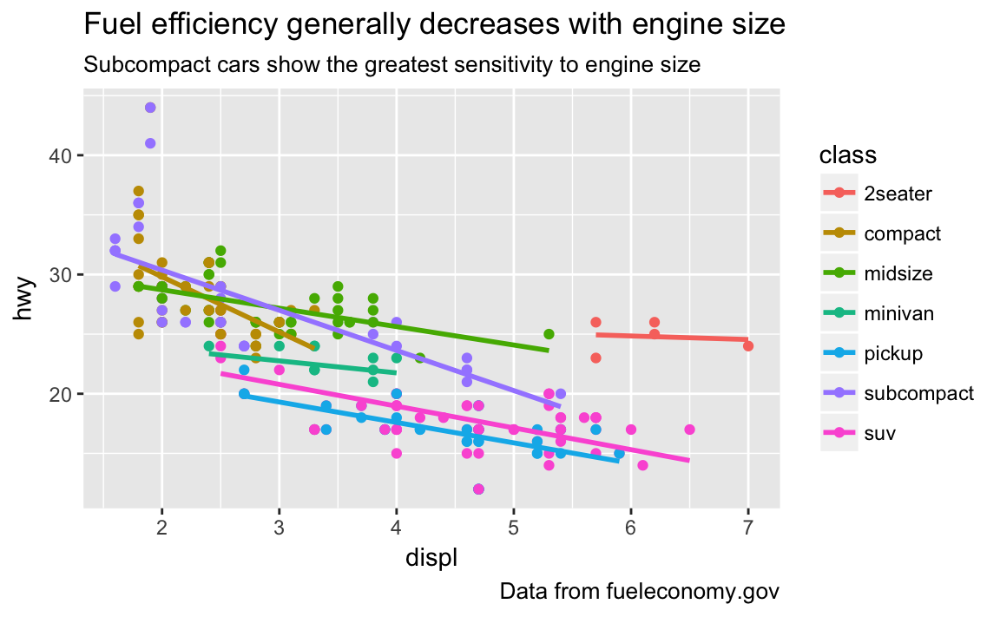
28.3.1.2 Exercise 2
Read the documentation for annotate(). How can you use it to add a text label to a plot without having to create a tibble?
With annotate you use what would be aesthetic mappings directly as arguments:
ggplot(mpg, aes(displ, hwy)) +
geom_point() +
annotate("text", x = Inf, y = Inf,
label = "Increasing engine size is \nrelated to decreasing fuel economy.", vjust = "top", hjust = "right")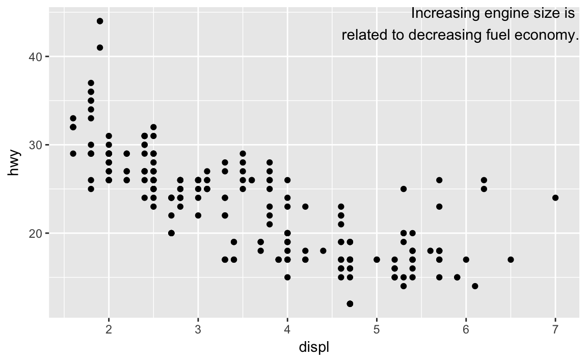
28.3.1.3 Exercise 3
How do labels with geom_text() interact with faceting? How can you add a label to a single facet? How can you put a different label in each facet? (Hint: think about the underlying data.)
If the facet variable is not specified, the text is drawn in all facets.
label <- tibble(
displ = Inf,
hwy = Inf,
label = "Increasing engine size is \nrelated to decreasing fuel economy."
)
ggplot(mpg, aes(displ, hwy)) +
geom_point() +
geom_text(aes(label = label), data = label, vjust = "top", hjust = "right",
size = 2) +
facet_wrap(~ class)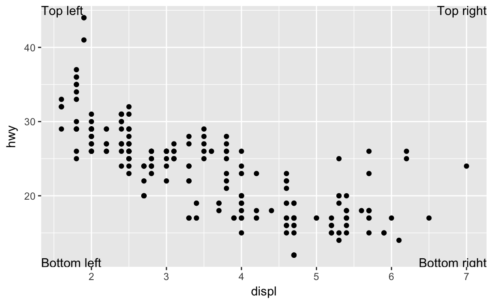
To draw the label in only one facet, add a column to the label data frame with the value of the faceting variable(s) in which to draw it.
label <- tibble(
displ = Inf,
hwy = Inf,
class = "2seater",
label = "Increasing engine size is \nrelated to decreasing fuel economy."
)
ggplot(mpg, aes(displ, hwy)) +
geom_point() +
geom_text(aes(label = label), data = label, vjust = "top", hjust = "right",
size = 2) +
facet_wrap(~ class)To draw labels in different plots, simply have the facetting variable(s):
label <- tibble(
displ = Inf,
hwy = Inf,
class = unique(mpg$class),
label = stringr::str_c("Label for ", class)
)
ggplot(mpg, aes(displ, hwy)) +
geom_point() +
geom_text(aes(label = label), data = label, vjust = "top", hjust = "right",
size = 3) +
facet_wrap(~ class)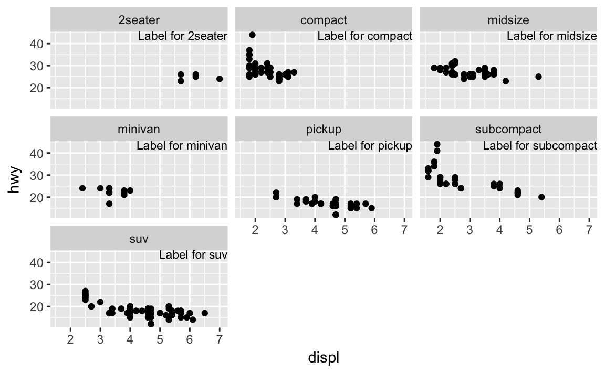
28.3.1.4 Exercise 4
What arguments to geom_label() control the appearance of the background box?
label.padding: padding around labellabel.r: amount of rounding in the cornerslabel.size: size of label border
28.3.1.5 Exercise 5
What are the four arguments to arrow()? How do they work? Create a series of plots that demonstrate the most important options.
The four arguments are: (from the help for arrow)
angle: angle of arrow headlength: length of the arrow headends: ends of the line to draw arrow headtype:"open"or"close": whether the arrow head is a closed or open triangle
28.4 Scales
28.4.1 Exercises
28.4.1.1 Exercise 1
Why doesn’t the following code override the default scale?
df <- tibble(
x = rnorm(10000),
y = rnorm(10000)
)
ggplot(df, aes(x, y)) +
geom_hex() +
scale_colour_gradient(low = "white", high = "red") +
coord_fixed()
It does not override the default scale because the colors in geom_hex are set by the fill aesthetic, not the color aesthetic.
ggplot(df, aes(x, y)) +
geom_hex() +
scale_fill_gradient(low = "white", high = "red") +
coord_fixed()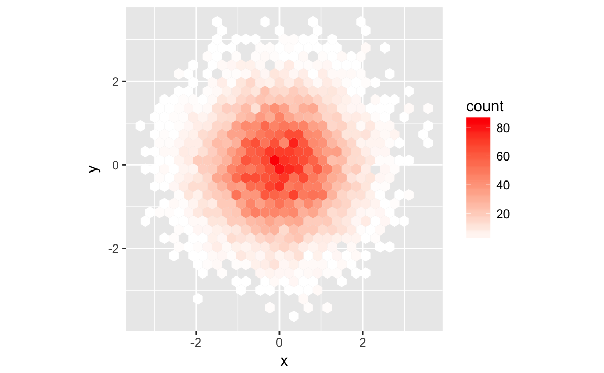
28.4.1.2 Exercise 2
The first argument to every scale is the label for the scale. It is equivalent to using the labs function.
ggplot(mpg, aes(displ, hwy)) +
geom_point(aes(colour = class)) +
geom_smooth(se = FALSE) +
labs(
x = "Engine displacement (L)",
y = "Highway fuel economy (mpg)",
colour = "Car type"
)
#> `geom_smooth()` using method = 'loess' and formula 'y ~ x'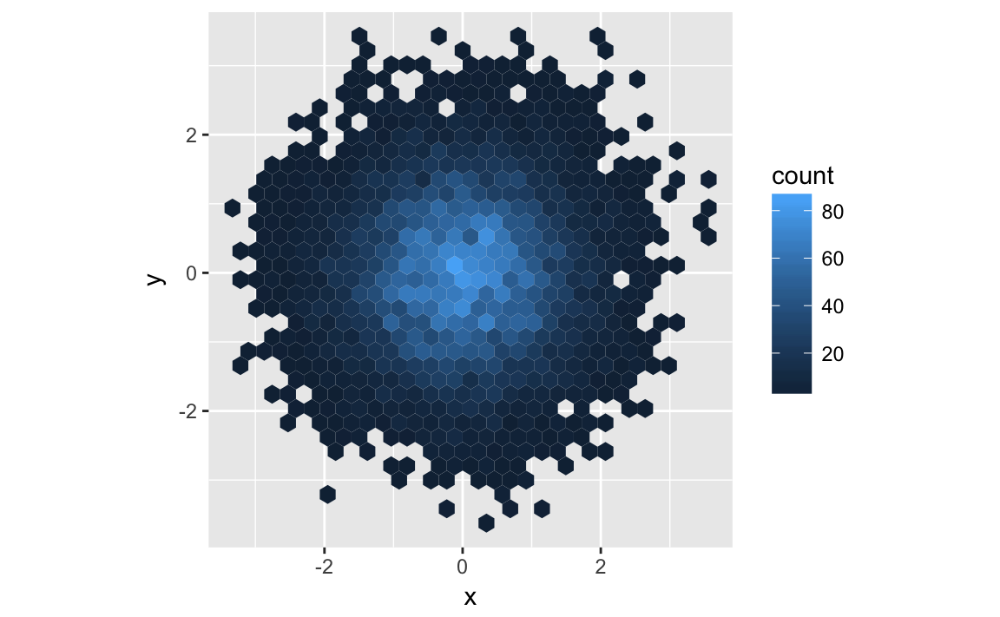
ggplot(mpg, aes(displ, hwy)) +
geom_point(aes(colour = class)) +
geom_smooth(se = FALSE) +
scale_x_continuous("Engine displacement (L)") +
scale_y_continuous("Highway fuel economy (mpg)") +
scale_colour_discrete("Car type")
#> `geom_smooth()` using method = 'loess' and formula 'y ~ x'28.4.1.3 Exercise 3
Change the display of the presidential terms by:
- Combining the two variants shown above.
- Improving the display of the y axis.
- Labeling each term with the name of the president.
- Adding informative plot labels.
- Placing breaks every 4 years (this is trickier than it seems!).
years <- lubridate::make_date(seq(year(min(presidential$start)),
year(max(presidential$end)),
by = 4), 1, 1)
presidential %>%
mutate(id = 33 + row_number(),
name_id = stringr::str_c(name, " (", id, ")"),
name_id = factor(name_id, levels = name_id)) %>%
ggplot(aes(start, name_id, colour = party)) +
geom_point() +
geom_segment(aes(xend = end, yend = name_id)) +
scale_colour_manual(values = c(Republican = "red", Democratic = "blue")) +
scale_y_discrete(NULL) +
scale_x_date(NULL, breaks = years, date_labels = "'%y") +
theme(panel.grid.minor = element_blank())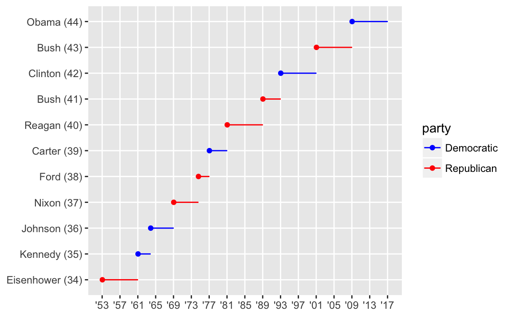
28.4.1.4 Exercise 4
Use override.aes to make the legend on the following plot easier to see.
ggplot(diamonds, aes(carat, price)) +
geom_point(aes(colour = cut), alpha = 1/20)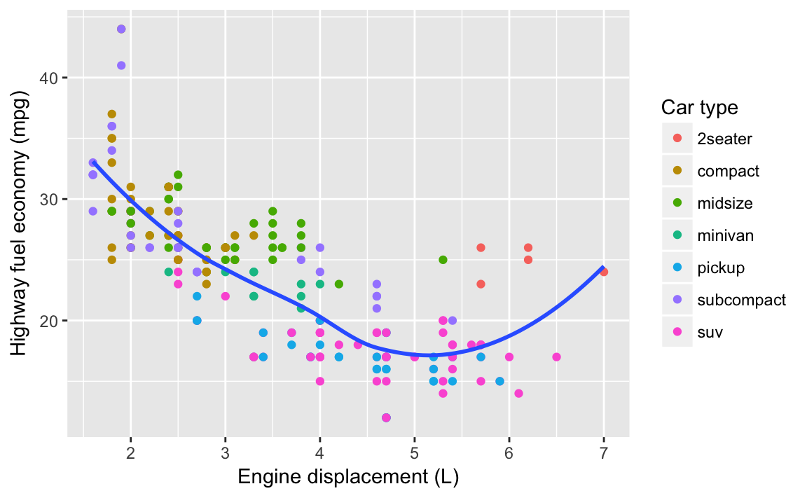
The problem with the legend is that the alpha value make the colors hard to see. So I’ll override the alpha value to make the points solid in the legend.
ggplot(diamonds, aes(carat, price)) +
geom_point(aes(colour = cut), alpha = 1/20) +
theme(legend.position = "bottom") +
guides(colour = guide_legend(nrow = 1, override.aes = list(alpha = 1))) 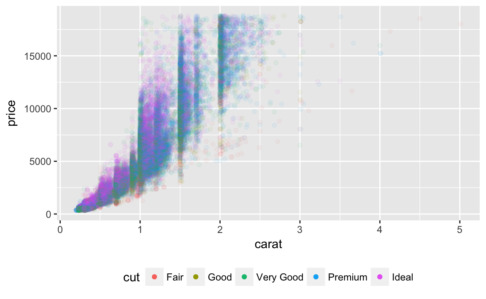